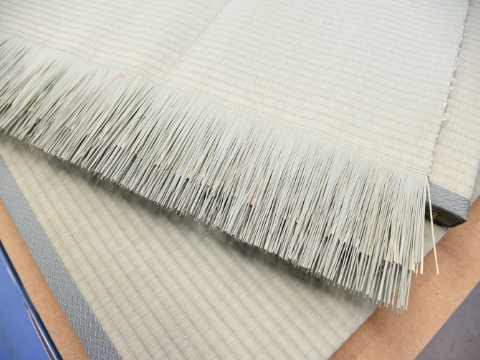
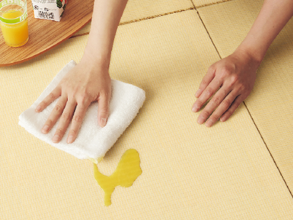
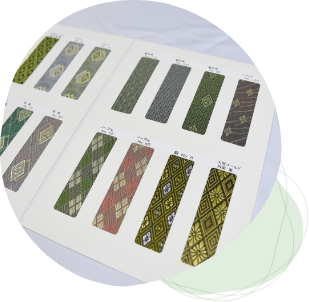

当店で一番売れているスタンダード畳は、天然ならではのイ草本来の香りや感触を楽しめます。
イ草には熊本産と中国産があり、どちらも取扱っています。
ご予算に応じて高品質なものからお手頃な価格帯のものまでご用意できます。
寺院や茶室などに使用する特殊な畳も販売しております。
 ［電話受付時間］8:00~20:00
［電話受付時間］8:00~20:00 ご相談・お見積りお問い合わせ
ご相談・お見積りお問い合わせ
当店で一番売れているスタンダード畳は、天然ならではのイ草本来の香りや感触を楽しめます。
イ草には熊本産と中国産があり、どちらも取扱っています。
ご予算に応じて高品質なものからお手頃な価格帯のものまでご用意できます。
寺院や茶室などに使用する特殊な畳も販売しております。

ダイケン和紙畳は、和紙をこよりのように巻き、い草のように細かくした和紙を丁寧に編み込んで作られた畳です。
普通のい草の畳よりも、ダイケン和紙畳は耐久性にとんでいます。
また畳表の素材は天然和紙を使用しており、カラーも豊富です。洋室空間にもぴったりマッチし、和室以外にリビングの畳コーナー等、コーディネートの幅が広がります。



 銀白100A
銀白100A 銀白100A・若草色
銀白100A・若草色 黄金色
黄金色 清流01・銀白色
清流01・銀白色 清流02・黄金色
清流02・黄金色 清流06・亜麻色
清流06・亜麻色 清流09・黒染色
清流09・黒染色 清流10・乳白色
清流10・乳白色 清流11・銀鼠色
清流11・銀鼠色 清流12・栗色
清流12・栗色 清流14・灰桜色
清流14・灰桜色 清流15・白茶色
清流15・白茶色 清流16・若草色
清流16・若草色 清流17・藍色
清流17・藍色 清流18・薄桜色
清流18・薄桜色 清流19・胡桃色
清流19・胡桃色 目積
目積 目積
目積 目積
目積 目積
目積 目積
目積 市松
市松 市松
市松 市松
市松 市松
市松 美龍
美龍 引目
引目 校倉
校倉 シュクレ
シュクレ シュクレ
シュクレ シュクレ
シュクレ

通常、畳には畳縁（たたみぶち）と呼ばれる布を、縫い込んで端の処理をしてありますが、畳縁をつけず、直接畳表をおりまげて仕上げます。縁が若干弱くなりますが、縁がついている物に比べ、部屋が広く見えたり、モダンな感じが人気です。目の少し粗い琉球表を使った琉球畳や 天然い草、ダイケンの和紙畳、セキスイの樹脂畳等、畳表の素材によりいろんな雰囲気が創れます。


フローリングにしたけれど和の空間がほしい、子どもたちの遊ぶスペースに畳を敷きたいなどのご要望が増えています。
畳の部屋での学習は集中力がUPすることが、ある研究で確認されています。
（監修公立大学法人北九州市立大学国際環境工学部准教授 森田 洋 農学博士）
また防音効果もありますので、アパート・マンションにお住まいの方もぜひご検討ください。
ライフスタイルに合わせてオーダーメードで納品することもできます。